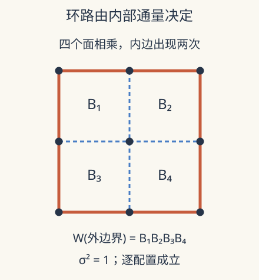

本页目录
现代场论方法 IV · 广义对称性：带电对象也可以是一条线
先修：对称性与关联函数、散射振幅、规范场论入口、多体纠缠与拓扑序。本讲需要闭路积分和边界概念；微分形式与拓扑缺陷的严格定义需继续阅读原文。
所有局域可观测量都不变，一条环路却能辨认不同的状态吗？
1. 先数清算符的维度
普通全局对称性作用在局域算符上。例如一个点上的复场带相位电荷，其支撑的时空维度是零，因此称为 0-form 对称性。一般的 \(p\)-form 对称性带电算符支撑在 \(p\) 维时空流形上：\(p=1\) 的带电对象是线算符，\(p=2\) 可以是面算符。这是在改变对称性作用的对象，不是给熟悉的旋转换个名字。
在 \(D\) 维时空中，对应对称缺陷支撑维度为 \(D-p-1\)。它在不穿过带电算符时可连续移动，相关函数不变；移动时若发生非平凡链结，便读出相位或更一般作用。这种可变形性称为拓扑性，与“图形看起来像环”不是一回事。
连续情形可用 \((p+1)\)-形式电流 \(J\) 表达，守恒条件为 \(d\star J=0\)。对称操作是在 \(D-p-1\) 维闭流形上积分 \(\star J\) 后取指数。普通电流的守恒电荷只是 \(p=0\) 的特例。
2. Maxwell 理论给出一个真实的一形式例子
四维无动力学电荷的 Maxwell 理论中，Wilson 线
沿闭曲线 \(C\) 定义。电一形式对称的生成面可写成 \(U_\alpha(\Sigma)=\exp[i\alpha\int_\Sigma\star F/e^2]\)，采用与最小电荷相容的归一化。\(\Sigma\) 是二维闭面，链结一次时作用为
这里强调拓扑支撑与作用关系，不能把它当作两个局域矩阵逐点相乘。若加入可产生相应电荷的动力学物质，Wilson 线能终止在带电插入上，原电一形式对称可被显式破坏或缩小为子群。是否有磁单极、规范群是否紧致也会改变磁一形式结构，不能只写一个 Maxwell 拉格朗日量便忽略全局定义。
规范变换是描述的冗余，物理全局对称性则对可观测对象有非平凡作用。二者都用到闭合关系，却不能因此混为一谈。
3. 把 Wilson 环路变成可以枚举的格点量
在二维方格每条边放 \(\sigma_e=\pm1\)，每个小方格定义通量 \(B_f=\prod_{e\in\partial f}\sigma_e\)。顶点规范变换将相邻边都乘 \(-1\)，每个面受到零次或两次翻转，故 \(B_f\) 不变。沿闭路的
也不变，因为每个经过的顶点出现两次。对一块没有孔洞的区域，把内部所有面通量相乘：每条内部边出现两次、平方为 1，只剩边界。因此
这是精确的离散边界消去恒等式，不依赖热平衡或平均。它使“沿边测量”与“区域内通量”联系起来。

4. 一个严格限定的面积律实验
取二维欧氏、开放平面、无物质的 Z₂ 规范模型，统计权重为 \(e^{\beta\sum_f B_f}\)，\(\beta\ge0\) 无量纲。规范固定后各面通量可以独立取值，且每组通量对应相同的规范简并数。因此
面积含 \(A\) 个面的闭路满足
这是此二维开放模型的精确结果，不是四维 Yang–Mills 禁闭的证明。\(A\) 用格点面积计，\(\sigma\) 是每个面的无量纲系数；转成物理面积要除以格距平方。周期边界会产生全局通量约束，不能继续无条件使用独立乘积。
先预测：保持面积不变，把区域拉成长条，期望会变化吗？这里的周长参照会区分这些形状，而独立面面积律不会；一般模型还可能有其他形状或各向异性依赖。
调整 β 与方形边长，比较独立面模型的面积律和使用同一衰减系数的周长律参照。参照曲线不是另一份模拟数据。
默认静态核对：\(\beta=\log3/2\approx0.549306\) 时单面期望为 \(1/2\)。实验默认取便于滑块输入的 \(\beta=0.55\)、边长 \(\ell=2\)，因此 \(A=4\)、周长 \(P=8\)，精确期望为 \((\tanh0.55)^4\approx0.062761\)。若用理想手算值 \(\log3/2\)，则恰为 \(1/16\)；同系数周长参照为 \(1/256\)。不要把相同系数比较当作真实相之间已校准的定量关系。
5. 局域不变与全局作用在哪里分开
在周期格点上，可以翻转所有穿过某条非收缩对偶闭线的边。每个面仍受到零次或两次翻转，但与之交叉一次的非收缩 Wilson 环路变号。这是可逐边检验的全局作用，不能由局域规范变换消掉。
这里使用周期拓扑来说明非平凡环路；上一节的独立通量平均则使用开放平面。两个边界设定承担不同任务，不能把周期例子的全局约束漏进开放模型公式。一般维度的高形式对称分类还需记录支撑维度、可终止性与拓扑缺陷，而不只是看见一条 Wilson 环。
面积律与周长律可帮助诊断某些规范相，但还要处理环路的短程周长发散、动力学物质屏蔽与有限尺寸。单个很小环路的衰减没有足够信息区分渐近律。研究应比较多种面积和形状，说明重整化与无穷大极限。
6. 更进一步：非可逆不是更高维的同义词
另一种推广改变的是融合规律。二维 Ising 共形理论的对偶缺陷 \(D\) 满足示意融合 \(D\times D=1+\eta\)，其中 \(\eta\) 是自旋翻转缺陷。右边是不同通道的直和，而不是一个群元素；\(D\) 没有普通群意义的逆。
这类非可逆结构与 \(p\)-form 分类是两条不同轴线。Ising 对偶线的例子不是把普通电荷变成一形式电荷，也不能通过把一个酉矩阵设成奇异矩阵来完整实现。Shao 的 2023 年讲义系统讨论其可检验选择规则和缺陷融合。
近期研究把缺陷、反常与全息关联联系起来。2026-09-02 的 Zhou 讲义含 Wilson 环及其他共形缺陷背景的关联计算，但共形缺陷不自动就是拓扑对称缺陷。其核心全息示例仍有大 \(N\)、强耦合或经典超引力范围。区分这些对象，才能判断一个新结果究竟扩展了计算方法，还是证明了新的对称约束。
7. 两道迁移题
题 1。 两个相邻小方格共有一条边。直接写出两面通量乘积，为什么内部边的符号不影响大环路？
核对题 1
共享边出现两次，贡献 \(\sigma_e^2=1\)，其余六条边各出现一次，正是外边界。这个结论对每个配置都成立，比只检验平均值更强。
题 2。 在四维时空，一个二形式对称的带电算符与对称生成缺陷各有几维？
核对题 2
带电算符为二维，生成缺陷维度为 \(4-2-1=1\)，即线。两者维度相加为 3，允许相应链结。带电算符和生成缺陷不是同一种对象。
速查与原始阅读
\(p\)-form 的带电算符为 \(p\) 维，生成缺陷为 \(D-p-1\) 维。开放二维 Z₂ 模型有 \(\langle W\rangle=(\tanh\beta)^A\)；不能外推四维相图或忽略周期通量约束。
- Gaiotto、Kapustin、Seiberg、Willett：Generalized Global Symmetries，2014-12-16 首稿、2015-01-10 修订，原始理论论文。
- McGreevy：Generalized Symmetries in Condensed Matter，2022 年首发，作者综述；拓扑序、规范结构与高形式对称。
- Shao：非可逆对称性 TASI 讲义，2023 年首发；缺陷融合与普通群的区别。
- Zhou：Pre-Strings 全息关联与缺陷，2026-09-02 讲义预印本；共形缺陷不自动具有拓扑性。
来源核查：2026-09-08。可回到多体纠缠与拓扑序比较两种研究语言。